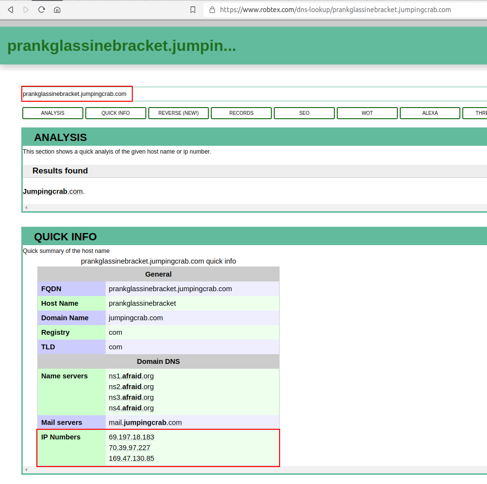
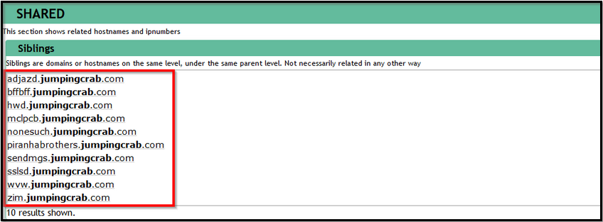
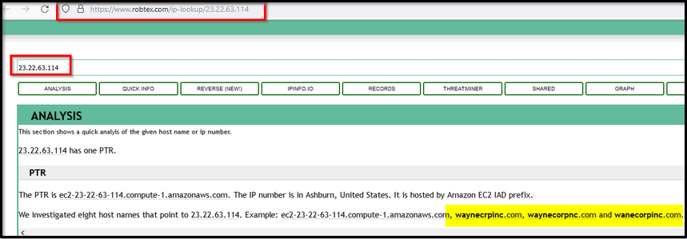
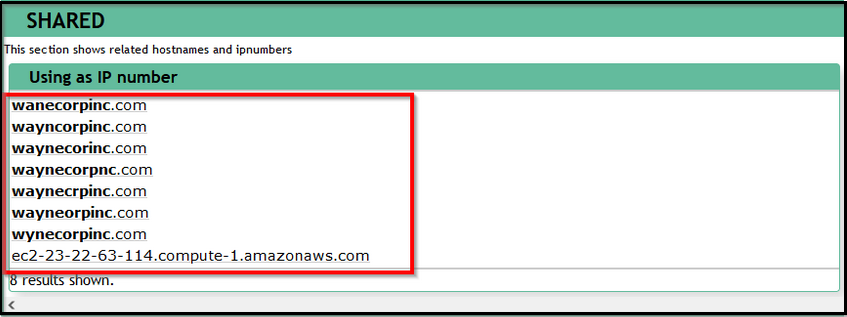
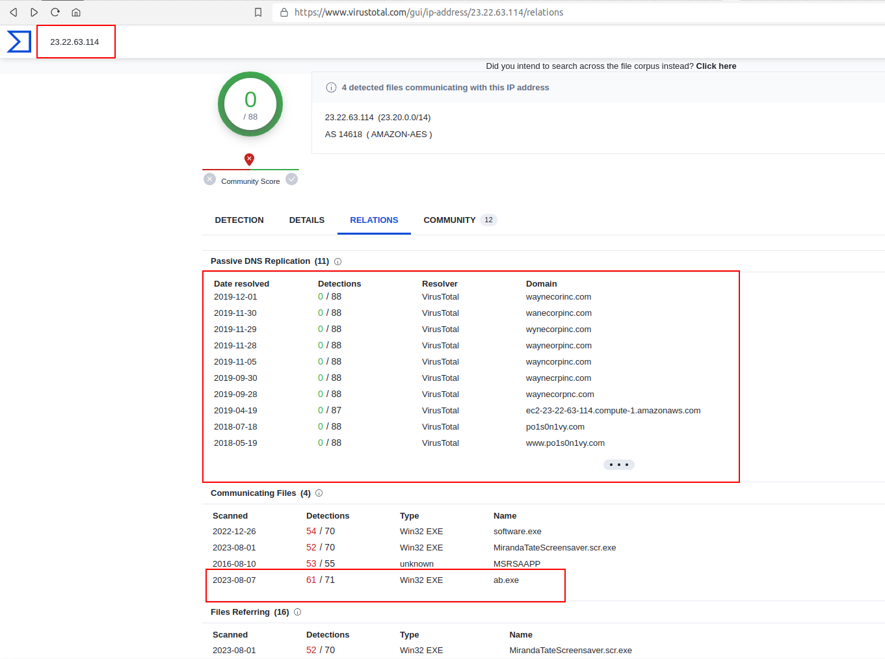
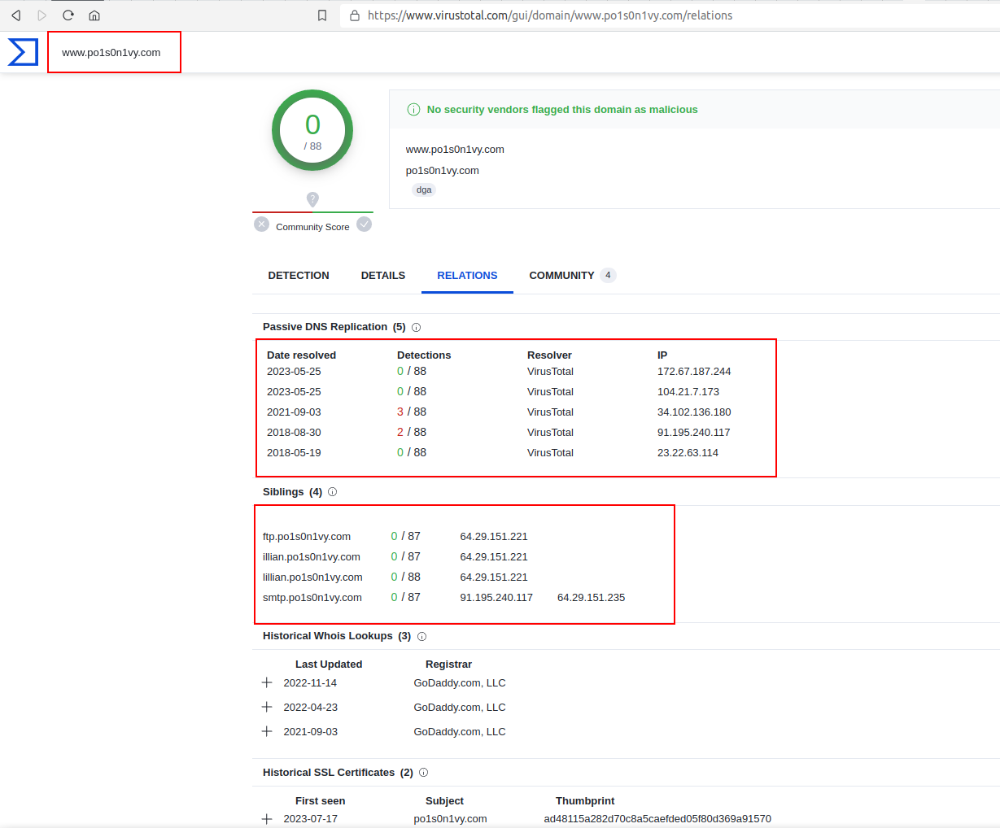
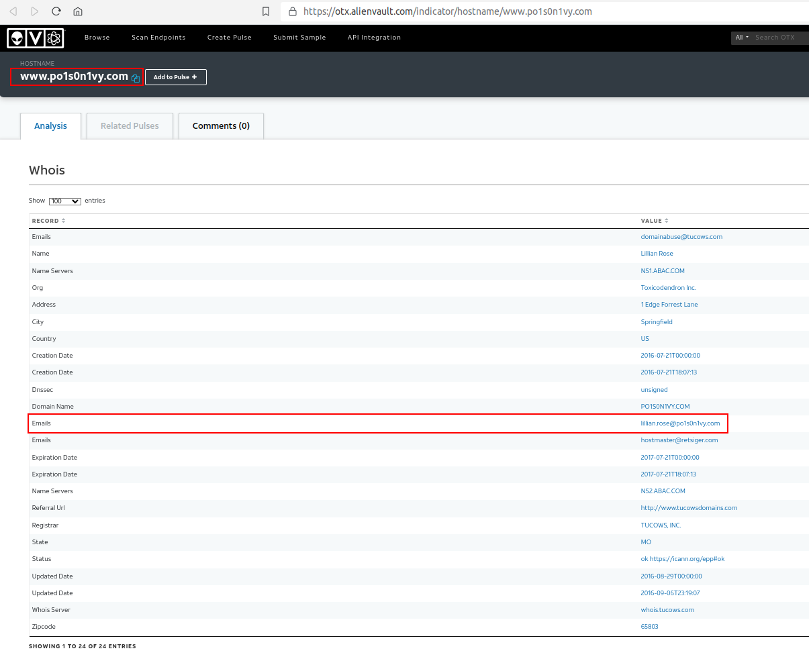

In the weaponization phase, the adversaries:
• Create Malware/Malicious document to gain initial access/evade detection etc.
• Establish domains similar to the target domain to trick users.
• Create a Command and Control Server for the post-exploitation communication/activity etc.
We have found some domains/IP addresses associated with the attacker during the investigations. This task will mainly look into OSINT sites to see what more information we can get about the adversary.
So far, we have found a domain prankglassinebracket.jumpingcrab.com associated with this attack. Our first task would be to find the IP address tied to the domains that may potentially be pre-staged to attack Wayne Enterprise.
In the following exercise, we will be searching the online Threat Intel sites for any information like IP addresses/domains/Email addresses associated with this domain which could help us know more about this adversary.
Robtex:
Robtex is a Threat Intel site that provides information about IP addresses, domain names, etc.
Please search for the domain on the robtex site and see what we get. We will get the IP addresses associated with this domain.
Reference: https://www.robtex.com/dns-lookup/prankglassinebracket.jumpingcrab.com

Some domains/subdomains associated with this domain:

{kind=link}
Next, by searching for the IP address 23.22.63.114.
Reference: https://www.robtex.com/ip-lookup/23.22.63.114

{kind=link}
What did we find? this IP is associated with some domains that look pretty similar to the WAYNE Enterprise site.

{kind=link}
Virustotal
Virustotal is an OSINT site used to analyze suspicious files, domains, IP, etc. Let's now search for the IP address on the virustotal site. If we go to the RELATIONS tab, we can see all the domains associated with this IP which look similar to the Wayn Enterprise company.

In the domain list, we saw the domain that is associated with the attacker www.po1s0n1vy.com. Let us search for this domain on the virustotal.

Alienvault
Alienvault is a cybersecurity company known for its Unified Security Management (USM) platform that offers threat detection, incident response, and compliance management, providing comprehensive security solutions for organizations.

We used various threat Intel platforms to find the attacker's infrastructure based on the following information we saw in the above activities.
Information we had:
• Domain: prankglassinebracket.jumpingcrab.com• IP Address: 23.22.63.114
Findings:
• Multiple masquerading domains were found associated with the attacker's IPs.• An email of the user Lillian.rose@po1s0n1vy.com was also found associated with the attacker's IP address.